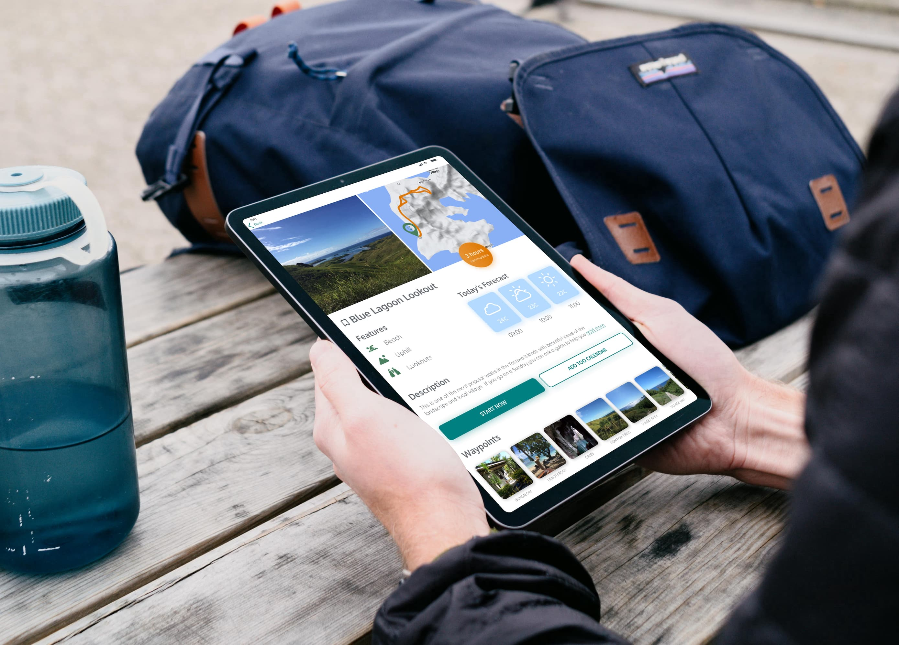
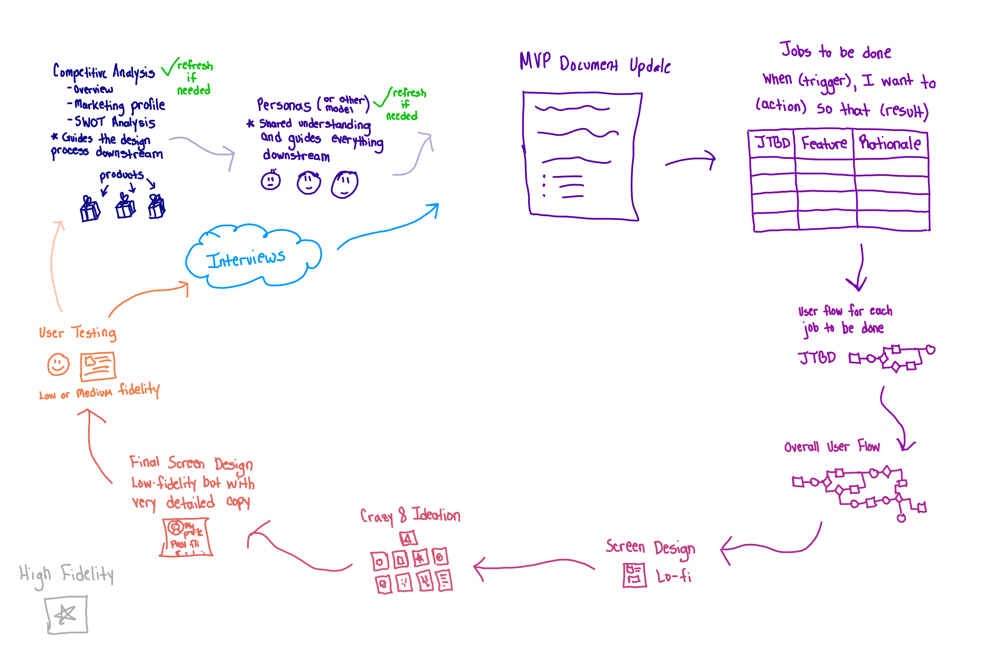

Outdoor Walking - Responsive Web App Design
Location-Based Walking Recommendations for Outdoor Walks
Why?
“And into the forest I go, to lose my mind and find my soul”
― John Muir
Everybody can benefit from a nice long refreshing walk but sometimes this requires some advanced planning. A one-stop app can make the searching, deciding, sharing and planning process much simpler and enjoyable.

Responsive Design
The urge to get outside can come at any time; while in the office, during flight, or in the middle of the night. We should be able to plan in advance from our work laptop, or on the fly from our phone.
High quality photographs guide browsing
Deciding on an outdoor adventure should be as fun and pleasant as the adventure itself. The photographic content will have the biggest influence on how the user decides to navigate the app, and is therefore the most important UI element.

Simplifying the decision making process
There is no need to have several tabs open while deciding. All of the essential information can be found in one glance including:
- Detailed maps with the actual path
- Walk features (e.g. lakes, picnic spots, bird watching)
- Weather forecasts relevant to the selected walk
- Indication of the level of difficulty and estimated completion time
- Photographic and information waypoint details
- Reviews from other visitors
The user can save their ideas, share with others and schedule into their own calendar.
Immersive as the user wants
Some of my users mentioned that they were walking alone and so waypoint photo and video functionality gives the user even more opportunities to engage with the app if they choose to do so during their walk.

The Best Part
The most striking part of the UI will be the photographs because they will be both professional and crowd sourced (accepted after a screen process for quality). Searching for a walk will feel like an adventure by itself.
Designed Using a Lean UX Process
I learned from working with product teams that it is very important to make a plan, stick with it, and limit the scope of deliverables to artifacts that deliver insights or increment the design.
Competitive Analysis
A competitive analysis of three different location-based recommendation apps helped to shed light on what opportunities exist to stand out in the market.

Personas
HEART
Did the design come from a place of deep empathy?
Did the work inspire people to take action?
Did the process instill a deeper understanding of those we're
designing for?
--IDEO
User interviews are the hardest part of the UX process because it requires convincing people to have what seems like the dreaded, 'meeting' with you. But once the scheduling and preparation is done, the actual interview itself can be pretty fun, even for the user.

Who is this app perfect for?
All of the users brought up their feelings of discomfort or lack of confidence when selecting to navigating unfamiliar walks. This was especially the case when walking alone. The users shared that knowing in advance what to expect in the form of photographs would make their experience more pleasant.
The journey is just as important as the destination
MVP Definition
User feedback built the foundation for the Minimum Viable Product of an app that would help the users search for and navigate the best routes for them.

Jobs To Be Done
Every functionality should deliver an output, that leads to an outcome that will benefit the personas. One habit I made sure to avoid is the "Wouldn't it be nice if...", "How about if...", or any temptation to add features that are not necessary for the user to get their job done.

User Flow for Each 'Job To Be Done'
BRAINS
Was the approach to discovery and design rigorous and
comprehensive?
Does the work feel smart, clever, or novel?
Is the design informed by a clear strategic intent?
--IDEO
To me, the user flow is the most fascinating part of the design process because it is where the User Experience is ready to become a User Interface.

Ideation
Crazy 8's
The Crazy 8 ideation method is a very intense divergent phase. From past experience, I have found it a little challenging to guide users through this as a workshop exercise because the short time limit seems to have a stressing affect on people.
I highly recommend to extend the time for Crazy 8 ideation so as to keep the mind in the correct 'relaxed' state while ideating.
Digital Paper Prototype
After some dot-voting and redrawing, the final low-fidelity screen designs are ready.
I actually crashed Figjam because it is not meant for GIANT drawing files. Adobe Illustrator for iPad wins on this one.
Low Fidelity Prototype
Early user testing helped to validate the user flow, to confirm if user can:
- Find suitable walks
- Gain information about these walks
- Navigate these walks

Testing
I wanted to know, overall, if users cloud flow smoothly through individual tasks that require searching, learning, decision making, navigating and analyzing data. The key questions were
- Can they find walks based on specific criteria?
- Can they save walks for later viewing, or add walks they like to their favorites list?
- Can they extract valuable insights about walks so they can better prepare?
- Can they use their walking history to recall details about their past walking experiences?
- Can they access the navigation feature correctly?

Retrospective
"Our brains strive to turn everything into a routine"
One thing I like about having a structured process is that it fosters a routine where you always know what you have done, where you are, and what you should do next. I really think this is a great way to learn and progress without encountering burnout.
MASTERY
Does the work reflect the depth of our expertise, intuition and unique
capabilities?
Was there a transfer of knowledge, wisdom or skills?
Did the work help you learn or master a new tool, language, medium, or
material?
--IDEO

Grey Boxing
I actually learned later that, when grey boxing, one should stick with only one or two shades of grey, so as not to give the wrong impression that the different shades of grey have a significant meaning. People are sensitive to color and even multiple shades of grey can be misleading.
I am always a fan of giving unique names to my children: Rectangle 1, Rectangle 2, Rectangle 3...

Inspiration
I find that visual design requires inspiration, persistence, breaks and A LOT sleep. Unlike programming, there is no compiler to micromanage my language.BEAUTY
Is the work iconic? Desirable? Evocative?
Does the work feel elegant and simple in its solution?
Does the beauty of the work elevate the overall design and its
function?
--IDEO
Visual Direction #1
Visual Direction #2

Preference Test
Dribble is inspiring, but it is also good to do a sanity check on some design ideas. Perhaps also to have some empathy for the developers who will build it.

Responsive Screens
Hand sketched
Designing responsive screens takes forever, and makes me sometimes wish we could keep the UI minimal and go from Apple pencil straight to code.

Grey boxing with grids at breakpoints
Designing responsive screens is really about planning for all possible scenarios. It is more difficult than planning for native apps, even native apps that are designed to work on both mobile and tablet.
Planning for responsive screens with a variable 12-pt grid
- XS (Margin: 15, Gutter: 10)
- S (Margin: 20, Gutter: 20)
- M (Margin: 30, Gutter: 20)
- L (Margin: 35, Gutter: 25)
MVP Screens
The logo is partially inspired by the dancing shrubs from Mario Bros 3. In all levels, the character will navigate through different stories on the corresponding map. On Level 1, which I believe was a sand theme, there would be a set of little green shrubs would dance back and fourth as Mario (or the chosen character) would move from story to story.

Design Changes
I tried very much to represent the categories with icons but they were not clear enough to the user. Photographic categories were much more clear and appealing to them.
What does it look like?
The app looks like a map based photo gallery. This solves the problem of the user wanting to have photographic evidence of their walk.

What does it feel like?
When actually using the features, the app feels somewhat like a hotel booking app. You browse based on criteria, make selections likely based on the images seen and finally can drill down into more details about the selection. While the app is not for hotels, this feel does solve the problem of the user wanting to decide on which walk they would like to take.
Expectations
In the beginning of the UI design process, I really thought I would be filling the app with new icons and illustrations however these things did not add significant value for the first MVP.

Retrospective
Some things I could have done better
- Figma's auto-layout feature. At the time of design, I had not learned to use the feature
- Reusable components. I found myself getting impatient and detached many instances during the design process.
- Framer is very good for responsive web design and I would have wanted to explore it as well